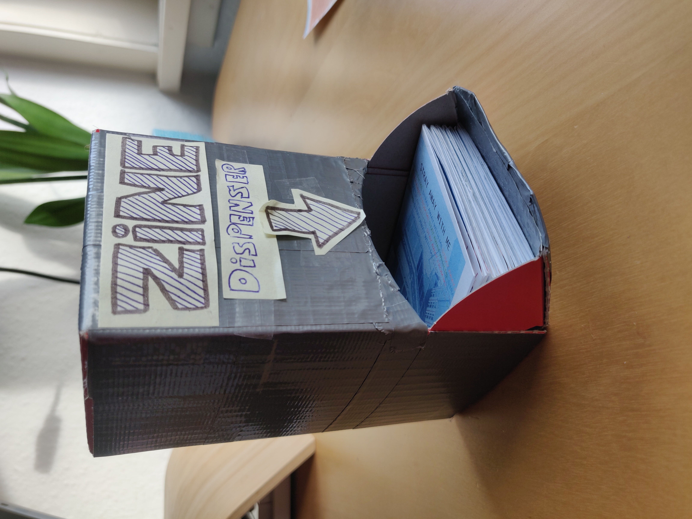

STRAY AWAY WITH ME
Date: January 2023
Medium: Zine
Since moving to a new city, I've been feeling estranged. I try to remind myself that there's a beauty in this feeling: the beauty of seeing the world through a new perspective and the unique curiosity that accompanies it. This feeling -- the friction between the angst and excitement of feeling lost -- is captured in this zine. Some pages are hard to read, to encourage a different way of looking. Deliberately confusing instructions are given. Readers are invited to remove the staples that hold the zine's structure, and set it free. In the spirit of the content, copies have been hidden throughout Utrecht.
